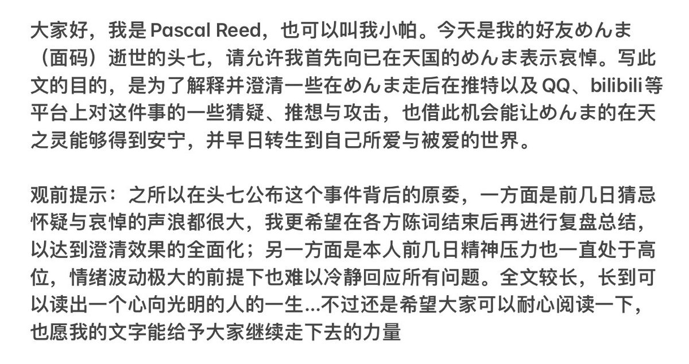
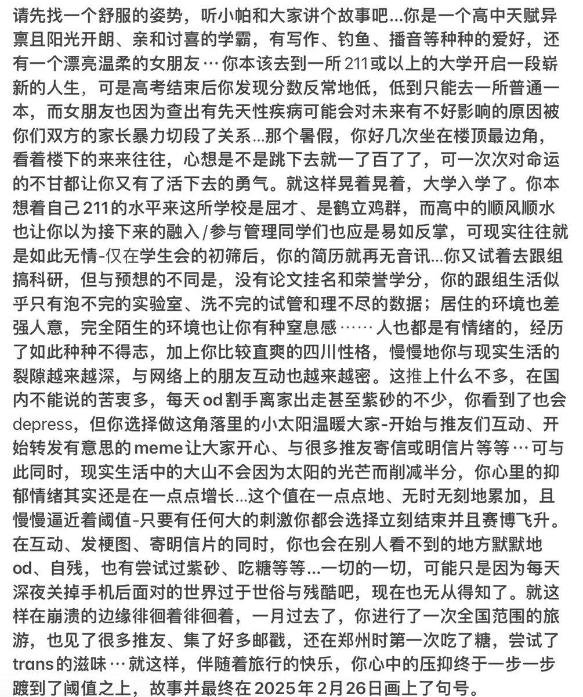
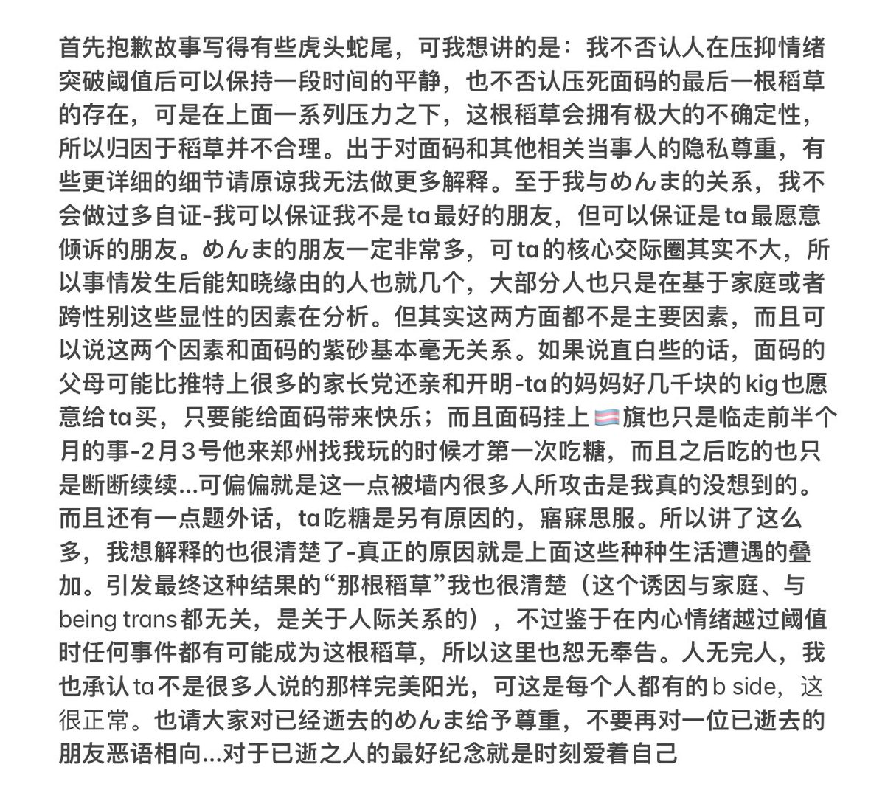
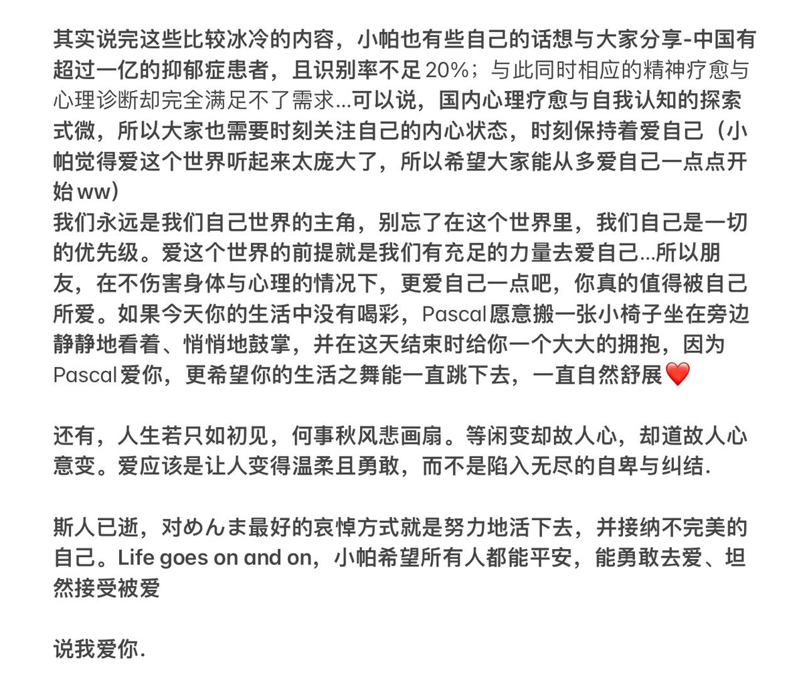

RT @ReedPascal: 今天是めんま（面码）的头七，关于ta出事的原因，作为知情人我也终于可以写出来了。希望这些文字能予逝者以安定、予生者以希望，更希望文字能带给大家些许安慰与力量❤️
*全文较长，web端用户可看图片，手机端的朋友可以看alt（图片描述），内容是完全…

*全文较长，web端用户可看图片，手机端的朋友可以看alt（图片描述），内容是完全…




今天是めんま（面码）的头七，关于ta出事的原因，作为知情人我也终于可以写出来了。希望这些文字能予逝者以安定、予生者以希望，更希望文字能带给大家些许安慰与力量❤️
*全文较长，web端用户可看图片，手机端的朋友可以看alt（图片描述），内容是完全一样的 https://t.co/unfPe1jaep
*全文较长，web端用户可看图片，手机端的朋友可以看alt（图片描述），内容是完全一样的 https://t.co/unfPe1jaep